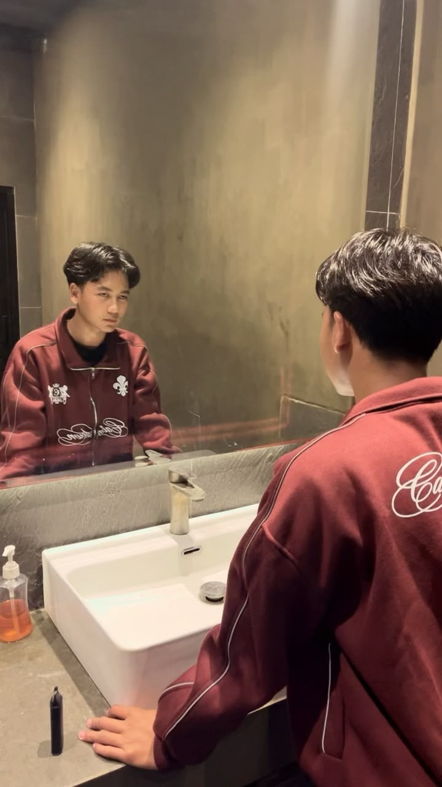

HTML5
Struktur web yang semantik dan mudah diakses.
TERBUKA UNTUK KOLABORASI
Web developer yang mengubah ide menjadi website modern, responsif, dan nyaman digunakan.
3+
Tahun belajar
5+
Proyek selesai
100%
Semangat berkarya

const developer = {
nama: 'Moh.Bayu',
fokus: 'Web Development',
lokasi: 'Indonesia 🇮🇩'
};
STATUS SAAT INI
Membangun sesuatu yang baru
01 / TENTANG SAYA
Saya seorang web developer yang tertarik pada perpaduan antara desain yang rapi dan kode yang fungsional. Buat saya, website yang baik bukan hanya terlihat menarik, tetapi juga mudah dipakai dan terasa cepat.
Saat ini saya terus mengembangkan kemampuan di bidang front-end development dan senang mengeksplorasi teknologi baru. Saya siap membantu mewujudkan ide digital Anda menjadi nyata.
Ceritakan proyek Anda →02 / KEAHLIAN
Teknologi yang saya gunakan untuk membuat ide bekerja di dunia digital.
Struktur web yang semantik dan mudah diakses.
Tampilan responsif dengan gaya yang konsisten.
Interaksi web yang dinamis dan intuitif.
Kolaborasi dan pengelolaan versi proyek.
03 / PROYEK PILIHAN
Beberapa proyek pilihan saya.
01 — MARKETPLACE
Marketplace digital untuk menjelajahi dan memilih produk atau paket by.U.
Total penjualan hari ini
Rp 2.450.00002 — APLIKASI KASIR
Aplikasi untuk mencatat transaksi dan membantu memantau penjualan.
03 — APLIKASI KELUARGA
Aplikasi pendamping untuk membantu orang tua memantau informasi dan aktivitas anak.
04 / KONTAK
Ada proyek, pertanyaan, atau sekadar ingin menyapa? Saya selalu terbuka untuk ngobrol.
Hubungi via WhatsApp ↗